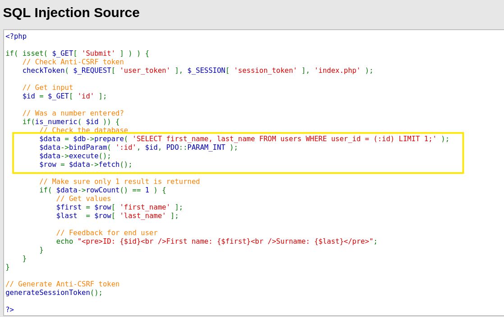

1. 입력값을 검증할 것 (화이트리스트 방식을 권고)
2. 시큐어 코딩을 이용할 것
"SELECT first_name, last_name FROM users WHERE user_id = '$id';";
위 코드는 SQL 쿼리문을 조작할 수 있기 때문에 SQL 인젝션에 취약합니다.
예방책) 쿼리문을 실행하는 방법을 파라미터 쿼리로 변경하는 것 아래의 코드와 같음

- 노란 테두리에 있는 prerpare(), bindParam(), execute()을 각각 호출하여 쿼리문을 실행
prepare() 부분은 "미리 실행할 쿼리문의 형태로 작성됨"
입력값 id 피라미터에 들어갈 값을 bindParam()으로 설정 이 함수를 쓰게 되면
"사용자가 입력한 값이 쿼리문의 일부가 될 수가 없고 온전히 데이터로만 처리되기에 or이나 UNION 등과 같은 키워드가 입력되어도 무의미한 문자열이 됨" (즉, SQL 공격을 하고 싶어도 할 수가 없게 처리됨.)
다른 프로그래밍 언어에서도 쿼리를 제공하는 함수가 있다.